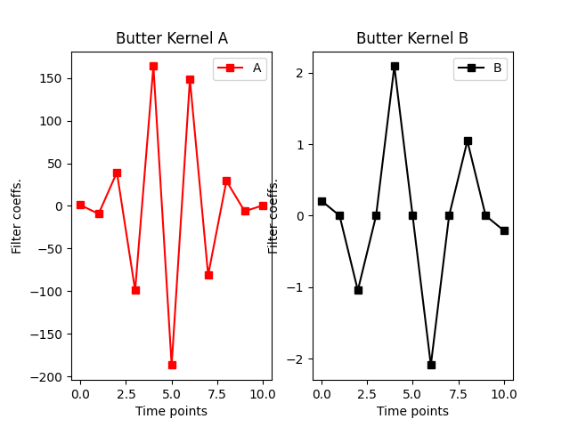

Filtering
FIR
- FIR_filter_example()[source]
Example of FIR filter for a narrowband filter
1. Creation of the filter kernel using FIR funtion
Creation of the input of the FIR function
Output of the FIR function is the kernel

2. Analysis of the frequency response
Analysis of the frequency response in comparison of the ideal response
In dB (it allows to see more details)

IIR
- IRR_filter()[source]
1. Creation of the filter kernel using butter funtion
The IRR filter are composed of two kernel, often call “a” and “b”.
2. Analysis of the frequency response
As IRR kernel are from very little order (comparing to FIR)
- e.g. butter filter from order 4 means the Kernel signal will be composed
of only 4*2+1 points. These lead in only 6 point in the frequency domain.
A better way to evaluate the kernel function is to filter a basic impulse response (arr = [0, 0, 1, 0, 0]) and take a look at its frequency response

WindowedSinc_filter
- filter_data_with_sinc_window_filter_example()[source]
Example of the windowed sinc low pass filter on real signal: